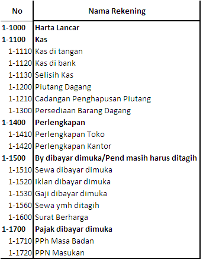
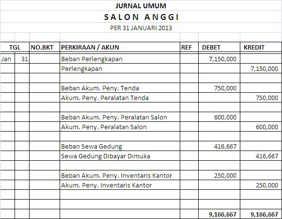
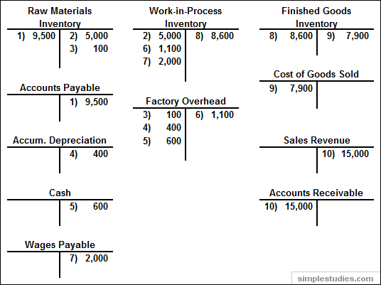

REKENING, JURNAL DAN POSTING
P1. Rekening
adalah suatu alat untuk mencatat transaksi-transaksi keuangan yang bersangkut-paut dengan aktiva, hutang,
modal, penghasilan dan biaya-biaya. Tujuannya adalah untuk mencatat data-data yang akan menjadi dasar penyusunan
laporan keuangan . Kumpulan rekening-rekening disebut Buku Besar atau Ledger
P2. Jurnal
adalah catatan berupa pendebitan dan pengkreditan dari transaksi-transaksi secara chronologis beserta penjelasan-
penjelasan yang diperlukan dari transaksi tersebut.
Kegunaan Jurnal :
a. Merupakan alat pencatatan yang dapat menggambarkan pos-pos yang terpengaruh transaksi
b. Alat pencatat yang memberikan gambaran secara kronologis.
c. Mengeliminir kesalahan pencatatan
d. Cukup ruang untuk mencatat keterangan.
P3. Posting adalah memindahkan catatan yang telah dilakukan di dalam jurnal ke buku besar.
Contoh : Rekening
|  |
Contoh : Jurnal
 |
Contoh : Posting Bentuk 2 Kolom
 |
Contoh : Posting Bentuk Akun T
 |